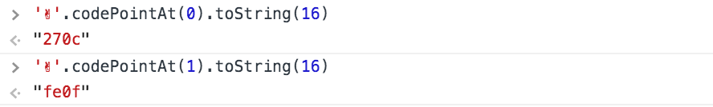
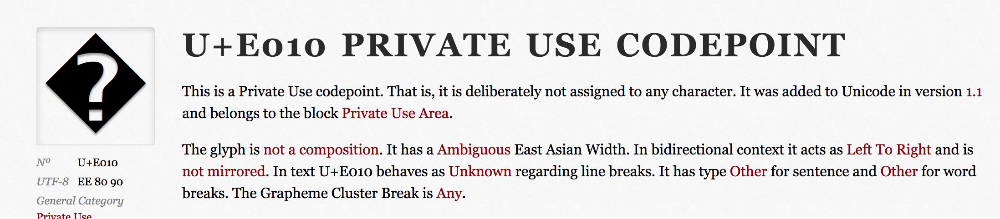
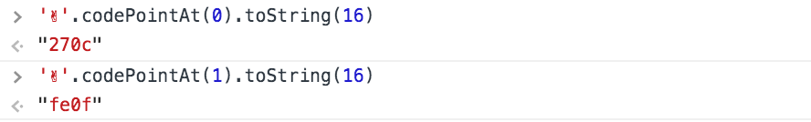
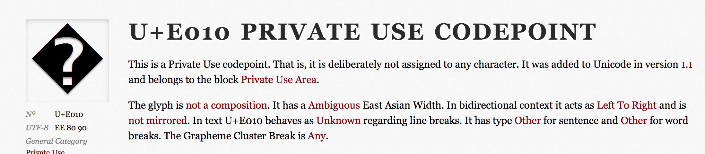

emoji的显示
会出现的问题：乱码+显示不一致
原因：各平台对Unicode标准实现不一致
emoji 表情是否能在不同的系统中正常显示，不出现乱码？
只要在unicode的编码中能找的到，那就能正常显示


在html中显示unicode，需要 &#x;表示，270A就是uicode码

这个就有可能会显示乱码，https://codepoints.net/U+E010，因为不是unicode标准编码，也就是第三方自定义的字符



原因：各平台对Unicode标准实现不一致
只要在unicode的编码中能找的到，那就能正常显示

在html中显示unicode，需要 &#x;表示，270A就是uicode码
这个就有可能会显示乱码，https://codepoints.net/U+E010，因为不是unicode标准编码，也就是第三方自定义的字符
